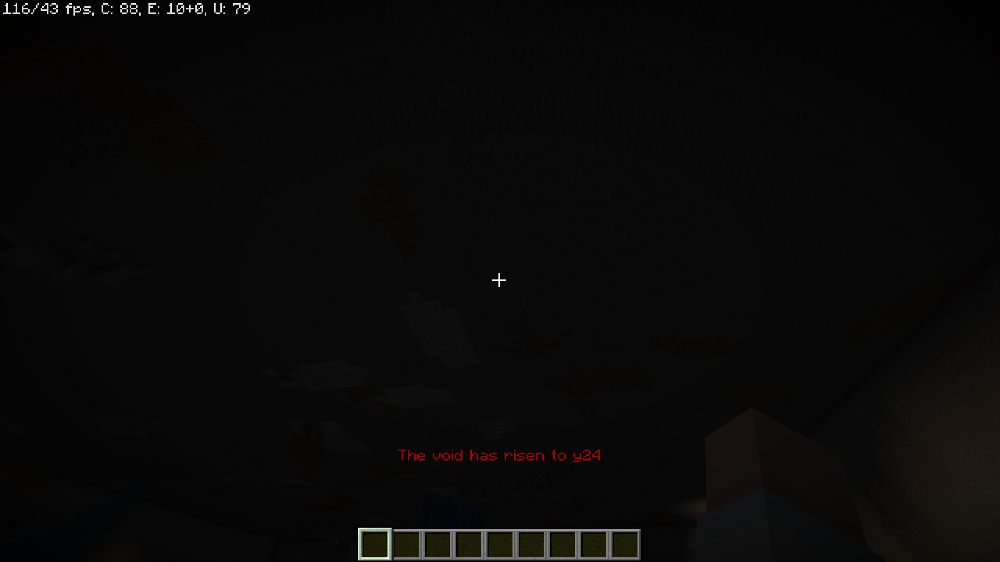
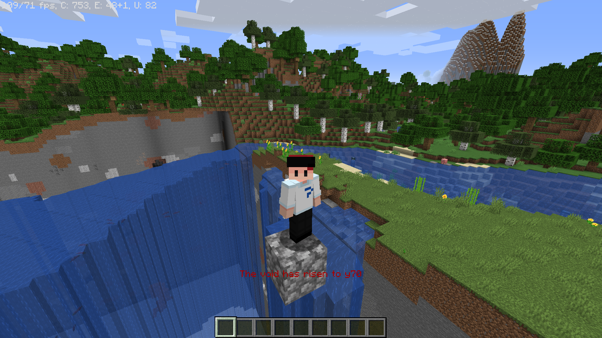
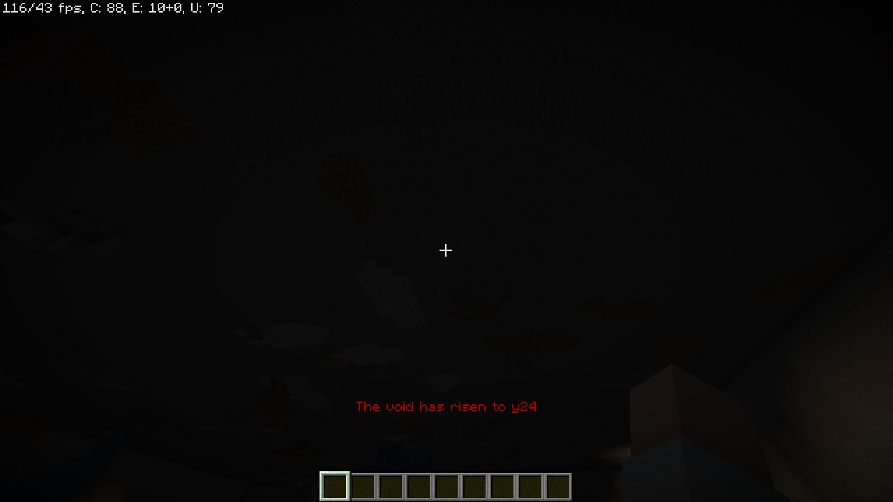
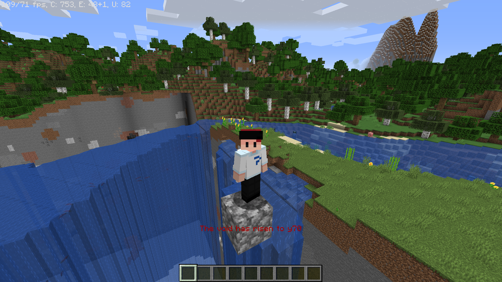
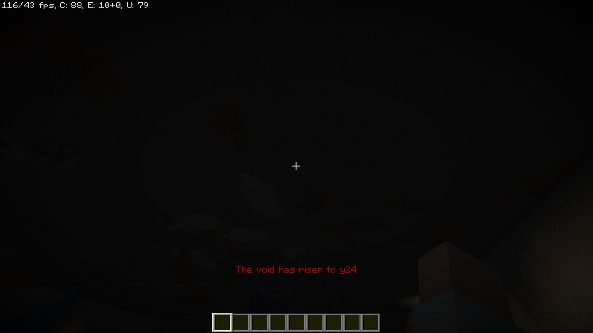
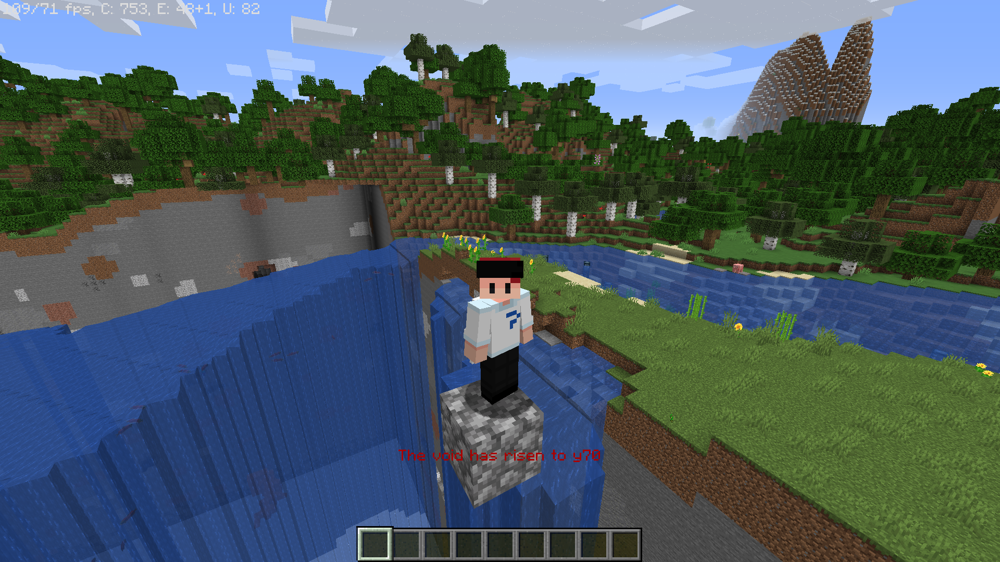

Void Rising Datapack
Supporting 1.13-1.16, this datapack makes the void rise from y=0 to y=245, making the game more of a challenge.
A lightweight data-pack for Minecraft Java Edition 1.16 that well, makes the void rise. Everything is controlled within the single datapack with customisable variables for timings if needed. Lag is handled well with falling blocks being killed to avoid sand blocks causing lag upon rising. Upon dying, you are automatically placed into spectator mode to allow you to watch the game in progress without interference.
Customisable timings
Using scoreboards you can configure event timings to make the event as slow or fast as you want!
vertical_align_topHeight limiting
Once the void reaches y245, it automatically stops going any further - stopping chaos.
no_accountsDead spectators
Upon death, you are automatically placed into spectator mode to stop interference with the game.
accessibility_newEasy to use
All events related to the void rising can be easily paused and reset in a new location if needed.
warningHandled lag
Falling blocks are automatically removed to stop any lag from sand and gravel when rising.
volume_upClutter-free
Status messages can be swapped between bossbar, actionbar or just disabled along with all sound effects.


As with every datapack, there is a very simple installation process.
Create New World then Data PacksOnce the datapack is installed, you can start the void rising with some simple set-up.
0 0 (x and z) in your world.function voidrising:startenabled score in the global scoreboard to 0.You can also configure timings for the warning in warning_time and the actual rising itself in rising_time (measured in ticks - 20 ticks = 1 second)
With this update you can now disable some of the pre-built features and enable some new ones.
spectator_death score in the global scoreboard.height_limit score in the global scoreboard.sound_effects score in the global scoreboard.rising_status score in the global scoreboard.bossbar_status score in the global scoreboard.This update fixes a few issues and adds some quality of life changes. Here we go: